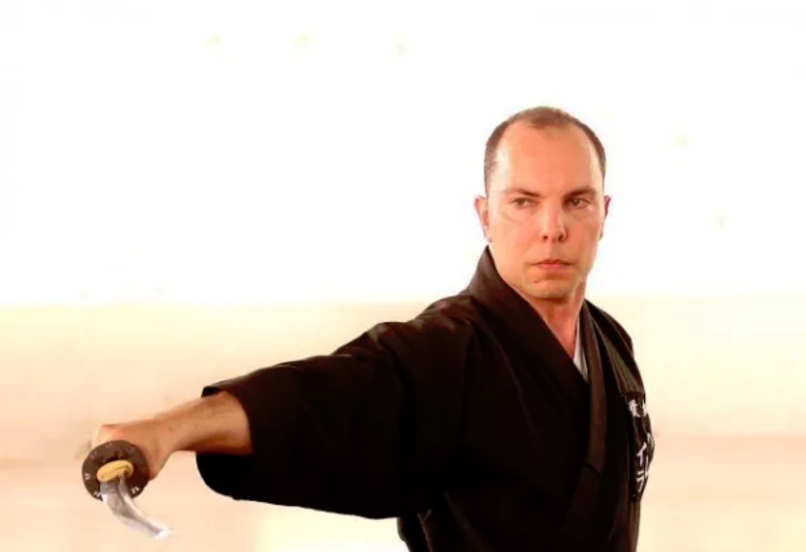
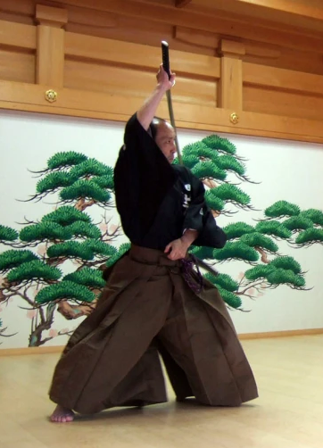

Orientação Técnica
Nesta página, realizamos uma breve apresentação do orientador técnico da Genbukan Brasil, Alexandre Pereira Sensei, e seu professor, Oshita Masakazu Sensei. Também é possível verificar a árvore genealógica da Genbukan Brasil.
Alexandre Pereira Sensei
Alexandre Pereira Sensei, 7º Dan Renshi Muso Jikiden Eishin Ryu, é o brasileiro com a maior graduação pela Federação Japonesa de Kendo (Zen Nihon Kendo Renmei - ZNKR).


Oshita Masakazu Sensei
Oshita Masakazu sensei foi um dos primeiros alunos de Haruna sensei. Dirige o Kobe Genbukan Dojo, na cidade de Kobe, província de Hyogo, e também é instrutor do Clube de Iaido da Universidade Kobe Gakuin.